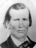
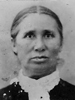

Archibald Waller Overton Buchanan Families
Home
Histories
Charts
Photos
Maps
Restricted
News
Info
Contact
| (husband's parents) | ----> |  |
Simmons Philander Curtis Born 26 MAR 1818 Sullivan,Tioga,Pennsylvania,USA Died 15 APR 1880 Springville,Utah,Utah,USA Emmeline Buchanan Born 1 MAR 1820 Mercer County,KY,USA Died 4 NOV 1899 Woodside,Emery,Utah,USA Married 4 JUL 1840 Nauvoo,Hancock,Illinois,USA | |
|
John Buchanan and Nancy Ann Bach  |
|  |
Martha Jane Curtis Born 29 JUN 1841 Quincy,Adams,Illinois,USA Died 15 NOV 1904 Moreland,Bingham,Idaho,USA Married William Mark Miles 23 FEB 1859 The 1st child of Simmons Philander Curtis and Emmeline Buchanan |
|
Enos Leroy Curtis Born 20 NOV 1843 Quincy,Adams,Illinois,USA Died 20 MAR 1844 Married Celia Durfee The 2nd child of Simmons Philander Curtis and Emmeline Buchanan |
| * |
John "B" Curtis Born 13 MAY 1845 Morley Settlemnt,Yelrome,Hancock,Illinois Died 1845 The 3rd child of Simmons Philander Curtis and Emmeline Buchanan |
| * |
Simmons Franklin Curtis Born 9 OCT 1847 Council Bluffs,Pottowattomie,Iowa,USA Died 15 APR 1917 The 4th child of Simmons Philander Curtis and Emmeline Buchanan |
|
Mary Ann Curtis Born 27 JUN 1851 Council Bluffs,Pottowattomie,Iowa,USA Died Married Scott Miller The 5th child of Simmons Philander Curtis and Emmeline Buchanan |
|
Joseph Augustus Curtis Born 24 NOV 1853 Springville,Utah,Utah,USA Died 25 MAY 1873 Price,Carbon,Utah,USA Married Delcena Daley_or_Glyons The 6th child of Simmons Philander Curtis and Emmeline Buchanan |
| * |
Emeline "E" Curtis Born 23 NOV 1856 Springville,Utah,Utah,USA Died 10 MAR 1866 The 7th child of Simmons Philander Curtis and Emmeline Buchanan |
|
Nancy Eltnora Curtis Born 27 FEB 1860 Springville,Utah,Utah,USA Died 2 DEC 1929 Salt Lake City,Salt Lake,Utah,USA Married B. D. Hanson The 8th child of Simmons Philander Curtis and Emmeline Buchanan |
| 123 |
Harmon William Curtis Born 20 JAN 1863 Springville,Utah,Utah,USA Died 23 OCT 1949 Price,Carbon,Utah,USA Married Martha Wilson Married Ester Fitt 14 MAY 1927 Married Larue V. Jennigan The 9th child of Simmons Philander Curtis and Emmeline Buchanan |